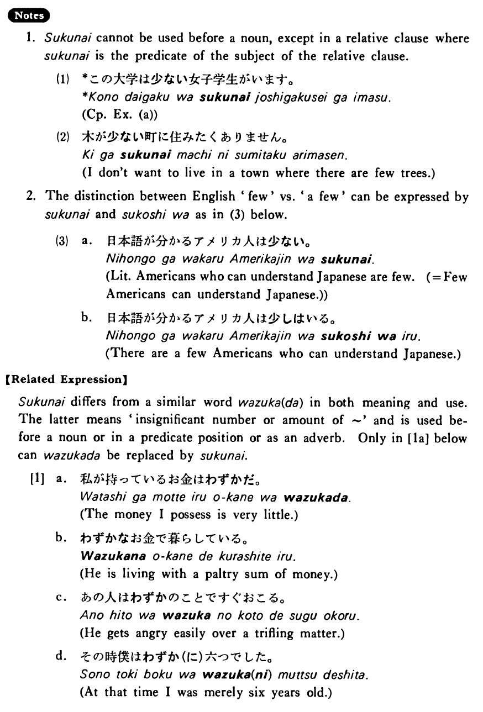

少ない・すくない (B. 427)
- (ks).
- この町はいいレストランが少ない・少ないです。
- In this town good restaurants are few.
- (a).
- この大学は女子学生が少ないです。
- The number of female students at this college is small.
- (b).
- 日本は犯罪が少ない。
- There are few crimes in Japan.
- (c).
- 日本語が書ける外国人は大変少ない。
- Foreigners who can write Japanese are very few.
